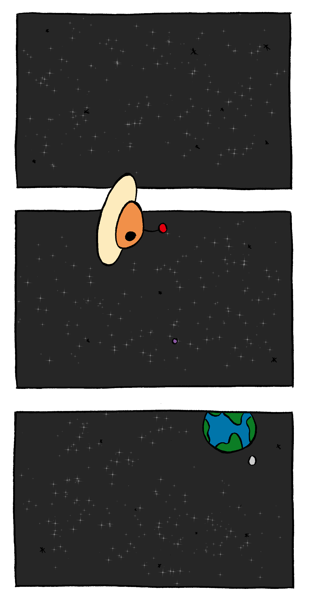
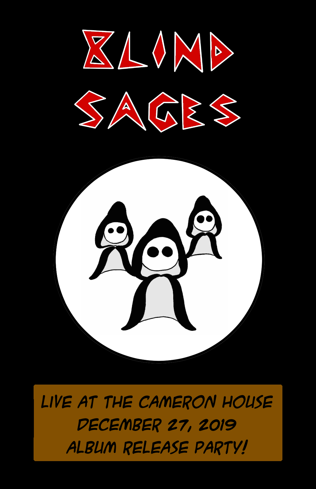
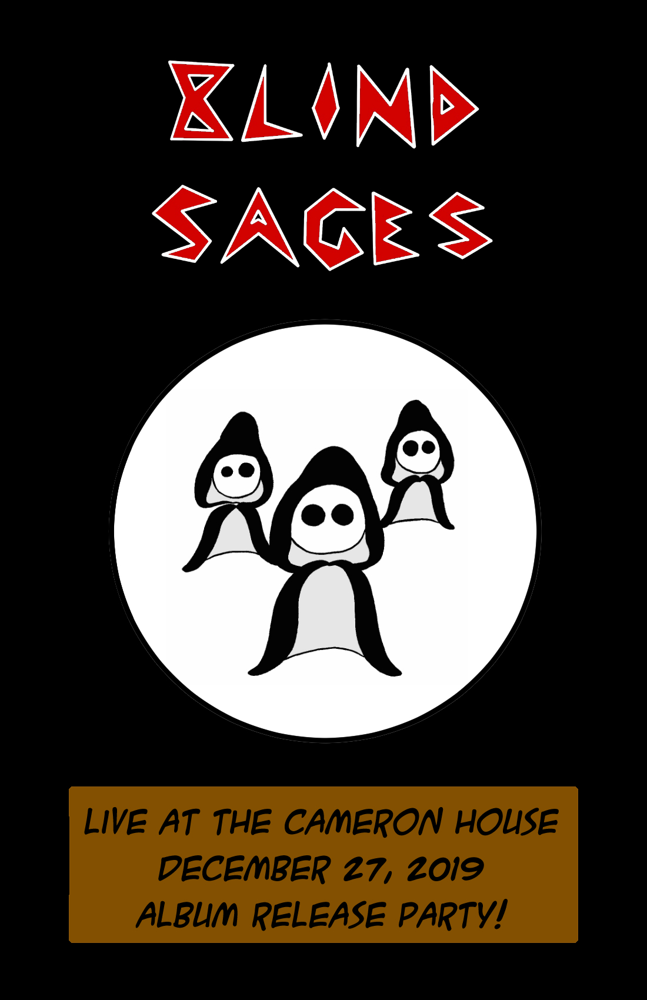

About Me
Education
I’m a student in the IT Innovation and Design (ITID) co-op program at Conestoga College in Waterloo.
This program focusses on teaching comprehensive skills in web and software development, but with an additional emphasis on user experience, design, and entrepreneurship. (Check out the ITID program page.)
I started the program in September 2019 with basically no coding experience, but I have seriously come to love it. The development process, problem solving, design thinking, collaboration, and continuous learning — it's all really good stuff!
Pre-Coding
Before coming to Conestoga, I worked as the Manager of the International Customer Service Department for LifeGlobal Group in Guelph. It was a great company, and I even got to travel to Belgium for a week to work with our office out there.
Unfortunately, the owners sold the company and many of us lost our jobs. This is (eventually) what led me to decide to return to school. (If you want to see more about my employment history, please have a look at my LinkedIn page).

Writing Comics
Over the past few years I've developed a little comic called Imaginary Inpho. It's about a character, Inpho, who has a podcast and lives in outer space. It's been on hiatus for a bit while I'm in school, but I do have a whole page dedicated to him here.
Books
I like books, and so I decided to include a section on the site where I can write about some of the books I've been reading. In this case, the page is mainly dedicated to books that are relevant to coding and design.
I'm also interested in other topics, too, like history and science fiction. But I suppose I'll have to save that for another website.
Music
Last but not least, I also enjoy playing music. I don't have a section on the website for this, but I do play drums with a band in Guelph called Blind Sages. We recorded an album in December 2019 and have played a number of shows in Guelph and Toronto. I did the artwork for the album cover and for a few show posters, too. (Here we are on Spotify: Blind Sages)
 
